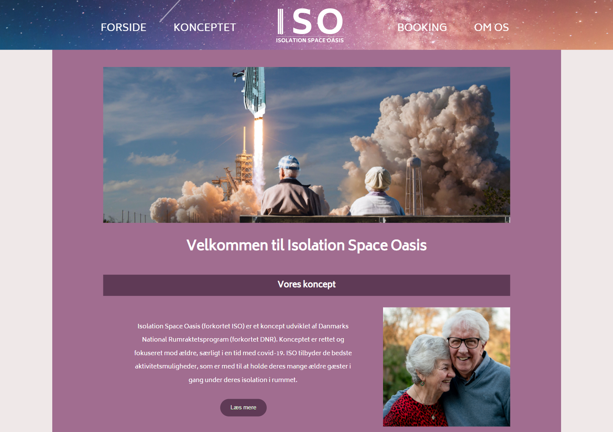
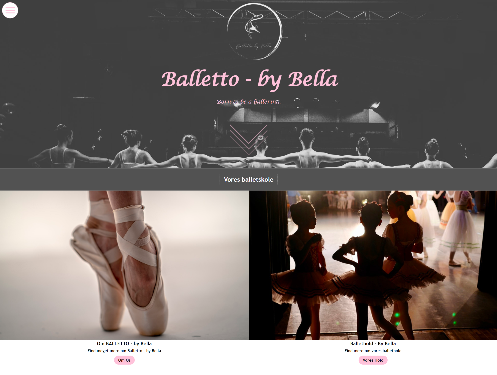
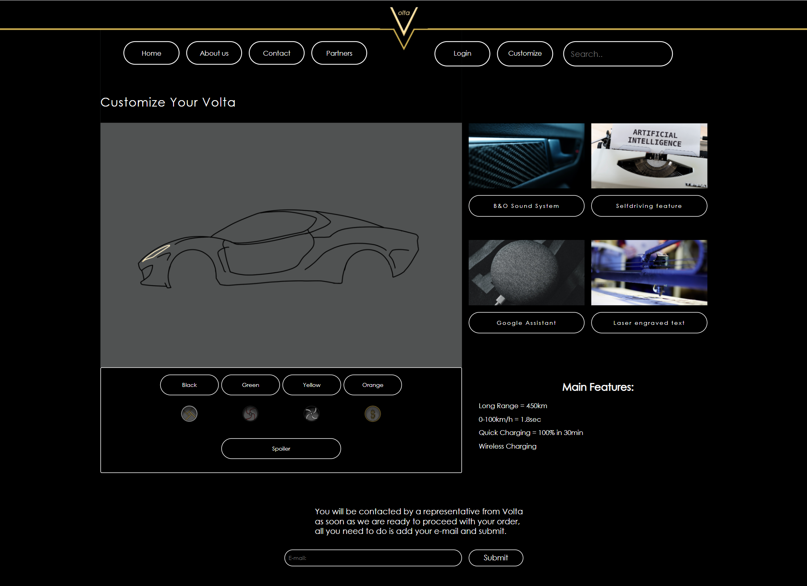

Både på Zealand Erhvevsakademi samt udenfor, har jeg lavet en række projekter, som har været med til at
definere den måde jeg arbejder på.
Derved også mine endelige produkter.
På Zealand Erhvervsakademi har jeg under uddannelsen haft følgende projekter som skulle udføres. I disse projekter har vi arbejdet med
Kodning i HTML og CSS - Konceptudvikling - Photoshop m.m.
Isolation Space Oasis
Dette var vores allerførste projekt på Multimediedesignuddannelsen. Her blev der
lagt mere vægt på at kunne producere noget kodning
og få det til at fungere frem for alt det designmæssige.
I projektet var jeg ansvarlig for kodning af header samt forsiden, hjælp til at få de andres til at fungere,
samt at samle koden inden aflevering.
Balletto by Bella
I vores andet projekt, mindede opgaven meget om første tema. Her overtog vi
et projekt fra en anden gruppe
og der var lagt mere vægt på processen. Her havde jeg lidt bedre kendskab til kodningen og var igen
ansvarlig for
dette, samt for forsiden.
Jeg prøvede her at gå lidt mere op i designet. Derudover begyndte vi at eksperimentere med lidt javascript
til
burgermenuen og pilen på siden. Modsat første projekt arbejdede vi med større og flere elementer på siden.
Volta Auto
Ved vores tredje og seneste projekt har vi lagt mere vægt på designet af
siden. Derudover begav jeg mig ud i at lave en bil configurator, som krævede en del arbejde i både
javascript og css. Da man skulle arbejde i flere lag, for at bilerne ikke kom i karambolage med hinanden.
Her var vores fokus lagt på at lave et eksklusivt design, og jeg var igen ansvarlig for koden i dette
projekt. Desuden var det første gang vi anvendte GIT, hvilket har vist sig at være et stærkt værktøj.
Udover webdesign har jeg også arbejdet med videoer. Både i forbindelse med skolen, men også privat, hvor jeg redigerer videoer for en streamer, inden de bliver uploadet på Youtube.
Videooptagelser - Adobe Premiere Pro